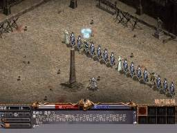

| 2001年11月30日 |
| 香港天堂官方網站大更新
今天香港官方網頁更新了其外觀，並加入了不少控制帳號的功能，而GD2S系統亦完成更新了，除了在使用上更為方便外，用戶亦可以看到比以前更詳細的資料，不過可能是新系統的關係，部分功能有時會出現錯誤。有關網站：
http://www.lineage.com.hk
http://www.gamania.com.hk:443/gd2s/

|
| 2001年11月28日 |
| 香港伺服器取得天堂1.70光碟的方法
詳情請參考官方的報導﹕
http://www.lineage.com.hk/lineage/events/cd_announcement/preview.htm
PS:
今天網主將會由英國搭飛機往香港﹐等待時間
+ 乘車時間 + 飛機時間 + 時差將會超過30小時﹐而且網主在家的電腦已經壞了﹐故此明天可能會暫更新。 |
| 2001年11月27日 |
| Episode X - 亞丁城
Nue's
Lineage放上了下一次大型更新(Episode 10﹐亞丁城)的資料﹐大家一定要去看看。 |
| 2001年11月26日 |
| 防具皇冠(Circlet)的資料
資料翻譯自Lineage
Compendium﹕

防具皇冠(Circlet)﹕防禦2﹐王族、妖精和法師可用﹐材質是金﹐重量20﹐除了是由金所造之外並沒有如王冠(Crown)可以增加魅力和精神的功能。
武器生命之劍(Sword of Life)的資料
資料翻譯自PlayForum﹕
http://community.playforum.net:8080/bbs/prog/column?action=read&iid=10051003&kid=859

在八月中﹐有一名家庭主婦在醫院危在旦夕﹐她極需要一種罕有的血型(RH-O型)﹐結果有一名Lineage的玩家ZGodsKnighTZ主動地去捐血給她﹐NCSoft為了表揚那名玩家的英勇行為﹐因此送了生命之劍給那名玩家。
武器生命之劍(Sword of Life)﹕攻擊力11/12﹐攻擊命中+1﹐王族、騎士和妖精可用﹐材質是鐵﹐重量40﹐根據持有者ZGodsKnighTZ所說﹐這把劍是單手的﹐使用後HP回後速度會增加1.5倍﹐而且可以安全地用武捲加到9﹐在死後是不會跌出來的。 |
| 2001年11月25日 |
| 香港伺服器 水之都探秘團

香港伺服器將會於12月中更新水之城﹐而在現在大家可以去報名參加水之都探秘團﹐如果選中的話便可以在更新之前先到測試伺服器深險﹐詳情請參閱有關網頁﹕
http://www.lineage.com.hk/lineage/lin_image/act_page/open_test/open_test.htm
台灣橘子水之城攻略本
台灣橘子最近推出了水之城攻略本﹐裡面最重要和有用的消息就是怪物掉寶物的資料﹐有玩家已經將資料整理並放了上網﹐大家可參考﹕
http://home.kimo.com.tw/mitac999/
註﹕台灣橘子的資料一向以來都不是十分可信﹐大家記得只作參考好了。
另外如果你發現香港或其他網上書店有這本攻略賣的話﹐請電郵給我﹐因為我都想買一本
^^ |
| 2001年11月24日 |
| 我要活下去格鬥大賽 - 短評
由昨天開始台灣伺服器舉行"我要活下去格鬥大賽"﹐但結果大部分賽事都變了"玩家逃命大賽"﹐工作人員只會不停創造怪物﹐真正格鬥中的玩家一下子就死
掉了﹐只剩下其他不停跑逃命的玩家﹐由於遊戲規則是最後一位活命的玩家勝出﹐所以誰最後被怪物幹掉就會勝﹐完全失去"格鬥"的意義。
根據各大討論區的資料﹐賽事流程如下﹕
1. GM將各玩家轉送入格鬥場
2. 各玩家(共約30人)等待GM宣佈開始
3. 賽時開始時﹐GM會創造大量安普長老
4. 過了一會﹐GM會創造大量多變型怪﹐當玩家打字時﹐變型怪也會模仿玩家﹐場面一片混亂。
5. 再過了一會﹐GM會創造大量多眼怪﹐多眼怪會麻疪玩家﹐是騎士及王族剋星
6. 如果玩家還未死清﹐GM會創造大量死亡騎士﹐而死亡騎士會召喚史巴托。
7. 如果玩家還未死清﹐GM會創造數隻惡魔(Demon)
8. 等待全部玩家死掉
9. GM清場
10. 盼獎...
以下是有關圖片﹐轉載自巴哈姆特天堂討論區﹐作者siu720325
(cobble)﹕



<-- 全場最精釆的圖... |
| 2001年11月23日 |
| 天堂將會加入20多首新背景音樂
背景音樂一向是Lineage(天堂)最差的地方﹐Lineage推出了將近四年半﹐但背景音樂竟點沒有改過﹐直至數周前才將唯一的背景音樂換了另一首﹐不過在12月中他們將會加入大量的高質素背景音樂﹐一共有26首﹐有關資料可以參考PlayForum:
http://community.playforum.net:8080/bbs/prog/column?action=read&iid=10051002&kid=1024
Lord British的獨有角色
Nue's
Lineage早前所公佈的新NPC圖﹐原來就是UO之父Lord
British的獨有角色﹗
資料轉載自Lineage
Compendium﹕

本網按﹕Lord British及其弟(或兄)佔了NCSoft
6.10%的股份﹐比天堂之父Jake Song的3.41%還要多﹐所以他便有自己的獨特角色...
另外他們亦貼上了一張聖誕節說話之島小姐Pandora(潘多拉)的圖﹕

如果我沒有記錯這應該是1999年聖誕節的。
Far Eastern Econmic Review訪問了NCSoft CEO Kim
Taek Jin
NCSoft是製造Lineage(天堂)的韓國公司﹐最近Far
Eastern Economic Review(遠東經濟評價雜誌)做了一篇關於NCsoft
CEO Kim Taek Jin的訪問﹐詳情請看﹕
http://www.feer.com/2001/0111_22/p084current.html |
| 2001年11月22日 |
| 新NPC的圖
轉載自Nue's
Lineage﹕
 正面 正面
 背面 背面
 正面 正面
 背面 背面
看來有點兒似拿劍的黑暗妖精 ^^
新品種的狗
Lineage
Compendium公佈了三種可能會在天堂出現的狗﹕
Dalmatian
 Pointer Pointer
 Great
Dane Great
Dane
PS: 多謝Nue的資料﹐原來我們早在奇岩賽狗場便可以看到他們
^^
武器傷害計算公式
Lineage
Warcry公佈了武器傷害計算公式﹐大家可以去看看。 |
| 2001年11月21日 |
| 台灣伺服器小更新
轉載自台灣天堂官方網站﹕
11/20 更新公告:
1.若攻擊自己的召換怪物,將不會自動消失.
2.若攻擊自己所飼養的寵物,將不會自動解散.
美國伺服器小更新
翻譯自美國天堂官方網站﹕
http://www.lineage-us.com/news/item68.html
1. 在新手地方增加NPC Innkeeper及Kennelmaster。
2. 更新了語言過漏清單。
3. 所有關於鋼鐵(Steel)的字眼改為鐵(Iron)。 |
| 2001年11月20日 |
| 韓國測試伺服器 - 瑪那魔杖再改
以下資料翻譯自PlayForum﹕
可能官方覺得瑪那魔杖不夠弱﹐所以今次改到每個目標最多只能偷40魔力﹐即使敵人有過百魔力﹐你最多也只能偷40﹐詳情請看﹕
http://community.playforum.net:8080/bbs/prog/column?action=read&iid=10051004&kid=1003
注﹕這只是韓國測試伺服器的修改﹐連水城也未更新的香港伺服器的玩家不用太過擔心。
另外在刪除角式會有十秒倒數﹐如果不小心按了刪除角色而又反應正常應該可以及時按取消﹕
http://community.playforum.net:8080/bbs/prog/column?action=read&iid=10051004&kid=1005
變形怪的資料
以下資料翻譯自Lineage
Compendium﹕
September, Braich, Promeus及amer做了一個關於變形怪的研究﹐當變型怪在看到我們時﹐如果我們是變了怪物的狀態﹐那麼我們就可以不用按CTRL直接攻擊變形怪﹐此外變形怪亦會有顏色顯示與我們的等級差距(只限美國伺服器)﹐加上他們有用瑪那魔杖去攻擊變形怪﹐因此他們測試到變形是等級18﹐魔力30﹐-25正義值﹐體力太約有300﹐他們估計變形怪的防禦和其他等級18的怪物差不多。
另外他們測試了怪物顏色和等級差距的關係﹐如下﹕
 |
綠色﹕怪物比我們低2等級或以上 |
 |
藍色﹕怪物比我們低1等級至比我們高2等級 |
|
金色﹕怪物比我們高3至8等級 |
 |
紅色﹕怪物比我們高9等級或以上 |
|
| 2001年11月19日 |
| 未開放新怪物
資料轉載自Nue's
Lineage﹐這個網站是由天堂情報搜集員Nue所寫﹐內裡有非常詳細的怪物資料﹐大家一定要看﹗
 影魔
(Silhouette) 影魔
(Silhouette)  高倫炎石人
(Fire Golem) 高倫炎石人
(Fire Golem)
本網按﹕根據新怪物的資料﹐下一次的大型更新(Episode
10)極有可能是鬼之城(Ghost City)﹐可能在鬼之城會有冰火洞呢﹗
新增香港天堂血盟連結 - 天下(天地人大聯盟)
天下(天地人大聯盟)﹕ http://skywin.24cc.com/
|
| 2001年11月18日 |
| 韓國測試伺服器消息 - 瑪那魔杖變弱了
消息來源為PlayForum:
http://community.playforum.net:8080/bbs/prog/column?action=read&iid=10051004&kid=994

本網按﹕韓國測試伺服器的瑪那魔杖多了一個特別的功能﹐就是攻擊命中-10﹗簡單來說就是變相減少偷魔力﹐因為打不中敵人就一定吸不到魔力﹐究竟會不會比最初(1.62前)的瑪杖更弱呢﹖
此乃天堂(Lineage)一個不變的定律 - 任何太過容易賺錢的東西一定會被修改。
新增香港天堂血盟連結 - 火星
天堂血盟‧火星﹕ http://98.to/firestar
香港天堂官方重大事項發表
我有點懷疑香港天堂官方網站作者的中文程度﹐最少都應該學一下怎樣用標點符號和比較官方的口吻﹐消息轉載自香港天堂官方網站﹕
官方重大事項發表
GD2S系統維護:
由於GD2S收費系統(GD2S開卡中心)需要進行硬體維護，將於11月27日上午10時至11月30日中午12時關閉。
為免影響玩家在系統維護期間順利登入遊戲，請各使用點數制或月費制之會員提早於11月27日上午10時之前使用GD2S進行增值或轉點至天堂賬戶內。
而天堂網頁內之選擇付費系統則照常運作。
天堂網站維護:
官方網頁(www.lineage.com.hk)將於11月30上午10時至12時進行軟硬體方面維護!!
敬請玩家注意以上維護日期及時間，諸多不便敬請見諒!! |
| 2001年11月17日 |
| 奇岩城未完成更新 - 血盟小屋擺設(下)
 武器擺設
武器擺設
壼
旗幟 武器擺設
武器擺設
壼
旗幟
 武器擺設 武器擺設
 武器擺設
武器擺設 武器擺設
武器擺設
 凳子 凳子
究竟凳子可不可以座﹖這是一個迷。 |
| 2001年11月16日 |
| 韓國測試伺服器消息 - 海之舞者(希爾黛斯)被拿掉﹗﹖
如主題﹐消息來源為PlayForum﹕
http://community.playforum.net:8080/bbs/prog/column?action=read&iid=10051004&kid=983
似乎遊戲中任何容易賺錢的方法都會在短期內被拿掉或修改﹐如圖騰﹐水龍﹐地龍﹐蟻洞...
所以大家要當發現容易賺錢的方法﹐就要在遊戲修改前﹐有幾多賺幾多。 |
| 2001年11月15日 |
| 韓國測試伺服器更新
本網翻譯自PlayForum﹕
http://community.playforum.net:8080/bbs/prog/column?action=read&iid=10051004&kid=981
1. 當玩家在Normal Zone攻擊中立或正義的玩家﹐每1點傷害值會扣自己100點正義值﹐有關正義值會在喝水後更新。
2.
即使你知道隱形玩家的位置﹐你不能給他們道具。
3. 寵物不會跟蹤玩家進入水底洞穴。
4. 新手開始時道具(匕首﹐皮甲克...)設定為不會掉落。
狗在等級25後有自動加速功能
本網翻譯自Lineage
Compendium﹕
玩家Edgy不斷地問NC官方有關狗的自動加效功能﹐終於得到以下答覆﹕
現在﹐當狗隻達到等級25時﹐他們會得到約一小時的自我加速功效﹐狗隻在存放及領取後﹐加速功效會重新計算。 |
| 2001年11月14日 |
| 奇岩城未完成更新 - 血盟小屋擺設(上)
 石像 石像
 郵箱 郵箱
 鹿頭 鹿頭
 旗幟 旗幟
 旗幟 旗幟
 油畫 油畫
 油畫
檯子 油畫
檯子
如果大家有去過奇岩城仔細遊覽﹐都知道當中有數間屋是沒有NPC﹐或部分NPC好像是沒有作用﹐如製造木材和說自己很忙的那位﹐而在水之城更新之後在奇岩城原本空置的小屋多了一位製造法師裝備的NPC﹐這些都可見奇岩城可能是未完全更新的﹐而當中製造木材和說自己很忙的那位NPC﹐本網相信他們的原本作用是製造血盟小屋擺設的﹐血盟小屋擺設可以裝飾我們的血盟小屋﹐好像Ultima
Online一樣大家可以依自己的喜好而去佈置我們的房間﹐但可以因為技術問題﹐在奇岩城推出前臨時取消了。 |
| 2001年11月13日 |
| 美國伺服器更新資料
美國伺服器又更新了﹐似乎比韓國的伺服器更新得更快﹐大家可以參考有關官方公佈的更新內容﹕
http://www.lineage-us.com/news/item66.html
本網翻譯如下﹕
1. 日本刀(Tsurugi)改為雙手武器
2. 將會有新的選擇伺服器介面
3. 修正了部分文字的文法錯誤﹐另外NPC Doett在製造某些道具時會顯示正確的文字
4. 背景音樂更新了 |
| 2001年11月12日 |
| 台灣伺服器活動 - 我要活下去格鬥大賽
簡單來說就是五十人在奇岩格鬥場進行生死決戰﹐最後一名生還者可以勝出﹐獎品有祝福十字弓﹐祝福防卷及祝福武卷各一﹐詳情可以參考以下網頁﹕
http://gd2s.gamania.com/Event/20011112/index.htm
|
| 2001年11月11日 |
| 美國測試伺服器新資料
資料轉載自Lineage
Compendium﹕
在美國測試伺服器出現了Paladin Armor﹐王族及騎士可用﹐重300防5﹐道具持有者BlueBerry估計可能是Paladin系統裝備的其中一件。

另外美國測試伺服器終於更新了背景音樂﹗天堂的背景音樂在1998年開始至今幾乎沒有甚樣更新過﹐在1999年曾經有一位程式設計員對我(Briel)說他們將會更新天堂的音樂﹐天堂將會有十多首用Microsoft甚麼甚麼格式的高質素背景音樂﹐我想都是空頭支票吧。
如果想連接美國測試伺服器去更新檔案﹐請在天堂的捷徑後加上"64.92.129.159"﹐強烈建議大家先備份原本的天堂。 |
| 2001年11月10日 |
| 卡瑞試煉圖片
鳴謝振宇提供圖片﹐創作者應該是Linmaster.com﹐但該網站好像已經關閉了。
卡瑞試煉好像在台灣和香港都未開放﹐以下是其試煉圖片(按圖放大)﹕
|
| 2001年11月9日 |
| 天堂未公佈新怪物
非常多謝天堂首席情報收集員Nue(台灣戰神馬爾斯伺服器)提供以下資料﹕
未知名稱的怪物


己知名稱的怪物
 老虎(Tiger) 老虎(Tiger) 熊(Bear) 熊(Bear)
水母(Acaleph)：看了許多韓美網站，就是沒看過這一色的水母
  巨人(Giant) 巨人(Giant)
 牛人(Minotaur) 牛人(Minotaur) 紙人(Paper
Man) 紙人(Paper
Man)
高倫冰石人(Ice
Golem)薩拉曼德(Salamender) |
| 2001年11月8日 |
| 載重的計算公式
The
Lineage Compendium 的其中一位網主amer在美國天堂的討論區發表了一篇關於天堂角色載重的研究﹐大家可以參考有關文章﹕
http://boards.lineage-us.com/cgi-bin/showflat.pl?Cat=&Board=Discussions&Number=53000&page=0&view=collapsed&sb=5&o=7&part=
簡單來說﹐只有力量和體質會影響載重值﹐其他的因素如職業是絕對不會影響載重值的﹔另外﹐力量和體質都佔相同的比重﹐每多一點力量或體質﹐就會可以拿多75重量(註﹕不計Rounding
Errors)﹐以下是其計算公式﹕
Round [ (力量 + 體質 + 1) / 2 ] x 150
{Round = 四捨五入}
PS: 曾幾何時有一位自稱天堂資深玩家(前蘇普﹐人稱耶穌...)竟然對我說20力騎比18體騎可以拿多點藥水﹐我當時的反應是﹕請創一個20力和18體的騎士比較後才好和我說話
^^ |
| 2001年11月7日 |
| 台灣伺服器水之城更新詳情
內容和韓國及日本在九月份更新的水之城差不多﹐資料轉載自台灣天堂官方網站﹕
(特別要留意的是等級50的角色會有等誅能力﹐騎士真的可以學習等級一魔法﹐但法師好像沒有...)
|
1.
|
產生角色時可以選擇能力值。目前玩家自己可調配能力值，給玩家點數，然後由玩家自行分配。 |
|
2.
|
介面更新。幾乎所有的指令都可以在介面上用滑鼠點選，8個熱鍵不分道具和魔法。可以任意設定。另外,
利用滾輪滑鼠也可操作熱鍵的使用，點選滑鼠滾輪鍵可以使用設定的熱鍵。 |
|
3.
|
增加了好友選單。可以得知好友是否有在線上。 |
|
4.
|
對於會損壞武器的怪物NPC，使用弓箭只會有1/2的損害度。 |
|
5.
|
新角色出生地更改，騎士位於”隱藏之谷”，法師與王族在”歌唱之島”，妖精在”妖精森林”。隱藏之谷與歌唱之島有免費的治療師可以幫助玩家回復體力，且該地區狀態屬於不可PK之安全區域。所有角色在開始遊戲時，依角色不同基本裝備多了該地點的地圖。 |
|
6.
|
每座城中多了一個”守護者之塔”攻城只要將此塔擊破後由宣戰盟的王族觸碰到即結束，同時非獲勝成員的人會被傳回村中需再重新宣戰。 |
|
7.
|
使用變卷或變杖（搭配變形形體控制戒指）後，玩家左方會多出一個視窗，內有包含所有可變形的怪物名稱，玩家可以自行選擇，不再需要打入英文。依照使用角色的等級，最高可以變身死亡騎士。 |
|
8.
|
升級時會發出一道紫色的光芒與音效，等級35以下自己可以看到，35以上則周圍的人都可以看到。 |
|
9.
|
使用魔法攻擊後，將會出現"戰鬥中，無法重新開始。"無法立刻登出遊戲。 |
|
10.
|
村中原更換寶石NPC侏儒取消，玩家可到奇岩村的寶石商人(迪歐)販賣。 |
|
11.
|
妖精向妖精倉庫旁的NPC”伊斯特”換取妖精森林地圖方式改為”一個安特的樹枝”。 |
|
12.
|
各村莊中的佈告欄，玩家可以自由留言，留一次言的費用為300金幣，可由留言者刪除，內容一星期後會自動消失。 |
|
13.
|
召喚怪物解散後，會自動消失，則怪物身上獵取的道具會掉到地上，不需要再費時將他殺掉。迷魅及寵物則不變。 |
|
14.
|
沙漠中會有幾個類似流沙的塌陷。一掉進去後則會有新的洞穴”巨蟻洞”，裡頭的怪物有”巨蟻”
“巨大兵蟻” “巨蟻皇后”等NPC。在該洞穴除了使用回卷和死亡外，是無法離開該地點的。蟻洞有八個入口，共有九窟，且不一定相連結。 |
|
15.
|
海音城地下有水神”伊娃”的”伊娃神殿”對伊娃神殿的管理者（伊芙洛爾）說話之後可用金幣交換”伊娃的祝福”的道具。喝掉它可以暫時在水裡呼吸。通過地下通道可以到達伊娃王國，若沒有伊娃的祝福，在水裡每5秒會減少一次HP，位於海音村東方的一座破舊燈塔（龍眸之塔）。也有連接到地下通道的的通路。 |
|
16.
|
新增角色特性。王族等級高於五十之後，可以招收盟員數量為魅力值的三倍。騎士等級五十之後可以向吉倫學習第一級的法術。妖精等級五十之後可以在沒有「指定傳送戒指」的情況下使用「/bookmark」的功能，不過位置並不十分準確。 |
|
17.
|
海音城外城門有一個為吊橋式的城門，此門需用魔法或是弓箭持續攻擊才能將此門破壞降下。 |
|
18.
|
海底無法使用召喚術，但是可以在陸地上召喚後在帶下去，且召喚怪物或寵物在水中並不會損失HP。 |
|
19.
|
部份法術無法在海底使用，如火球術等….。 |
|
20.
|
新增法師道具，可在奇岩村中找『莫麗雅』製作（魔法師之帽）與（魔法師長袍）全套可以增加50MP。 |
|
21.
|
新增騎士道具，可在奇岩村中找『海克特』製作（鋼鐵手套『全職』）、（鋼鐵頭盔）、（鋼鐵長靴『全職』）、（鋼鐵金屬盔甲）、（鋼鐵盾牌）全套可多3點防禦（多扣3點）。 |
|
22.
|
新增伊娃之盾，可在伊娃神殿的管理者『伊芙洛爾』製作，裝備時具有保持加速的功能。 |
|
23.
|
新增尤米長弓，可在妖森中找『娜魯帕』製作。 |
|
24.
|
新增血盟信紙。一封信可寄給全血盟成員。 |
|
25.
|
新增傳送回家卷軸（隱藏之谷）、（歌唱之島），可由新手區內的怪物中獵取。 |
|
26.
|
新增地點”鏡子森林”，內有叫做『變形怪』的NPC，會模仿玩家形體、ID、封號、也會學玩家說話。 |
|
27.
|
新增地點”海底世界”，裡頭大部分都屬於海底怪物，其中包含『美人魚』、『人魚』、『希爾黛斯』….等。 |
|
28.
|
喝水時，螢幕畫面將會比以往增加更耀眼的光芒。 |
| 29. |
部分地區戰鬥/安全區域作調整變更. |
| 30. |
試練之任務道具將會直接掉至試練成功角色身上,並且無法轉移 |
|
| 2001年11月6日 |
| 台灣伺服器攻城方式將會改變
台灣伺服器在11月7日水之城的更新後﹐攻城的方式將會改變﹐大家不用再去殺死守城血盟的王族或奪取皇座了﹐在城堡內城門外將會有守護者之塔﹐只要守護者之塔被擊倒﹐宣了戰的王族便可以按上皇冠而得到城堡(本網估計屈時王族只用站在一旁等守護者之塔被攻破﹐然後鬥快去按皇冠...)﹐其實在世界各地的伺服器早已更新了這種攻城方法﹐相信香港伺服器將會在12月才有水之城的更新﹐比韓國伺服器大約慢3個月。
有關消息轉載自台灣官方天堂網站﹕
首先，先和大家說的是，水之都之後的版本，攻城的方式改變囉！
會改變那些東西咧？以下就秀出來給你看唷！
1.城堡內新增”守護者之塔”。
2.宣戰開始之後守護者之塔才可以被成功攻擊。
3.與城門一樣，守護者之塔在戰爭結束之前無法修復，也無法接受治癒術。
4.宣戰方人員將塔攻破之後，塔內會浮出皇冠。
5.塔內之皇冠並非實際物品，而是城主的象徵。
6.宣戰方血盟王族要得到此皇冠才算勝利，無法以占上王位與殺掉城主得到城堡。
7.宣戰方王族是必須觸碰皇冠而並非撿起皇冠。除了王族之外其它的職業觸碰到皇冠皆無效
8.守城方城主無法觸碰皇冠
9.當城堡易主之後，所有非城血盟的玩家都會被傳送至村莊，此時必須重新宣戰。守護者之塔會自動修復，請小心保護它吧。
以下是圖解：

美國伺服器小更新
轉載自美國天堂官方網站﹕
http://www.lineage-us.com/news/item65.html
最主要的就是修正了城堡守衛的人工智能﹐簡單來說大家不能再引守衛到一些守衛不能行回城堡的地方。
|
| 2001年11月5日 |
| 天堂劇本總數由十二個加至二十四個﹗
以下消息轉載自 台灣聊合新聞網﹕
http://www.udnnews.com/NEWS/INFOTECH/GAME/566812.shtml
天堂改版水之都
海上發表
記者廖敏如／海上報導
遊戲橘子宣布7日推出線上遊戲「天堂」新改版內容「水之都」，為呼應水之都海洋旅行的特色，遊戲橘子日前選擇在海上郵輪舉辦改版發表會，由遊戲橘子營運長沈秉文帶領工作人員以跳水等特別手法，象徵開啟水之都大門。
遊戲橘子此次結合旅遊業者麗晶郵輪，讓媒體與玩家搭乘「金牛星號」從基隆港出海到公海參加改版發表會。
遊戲橘子表示，遊戲改版內容增加水之都領地5大地圖，包括海音村、海音城、伊娃神殿、地下通到、海底遺跡，並增加鏡子森林、水底世界、巨蟻洞窟等3個視覺特色，與歌唱之島、隱藏之谷2個新手專用練功地圖，以及20多種怪物等。
沈秉文指出，韓國遊戲原廠NcSoft原本設定天堂遊戲共有12個劇本，其中水之都為第9個改版，後來又決定要在原12個劇本後，再增加12個劇本，讓玩家可以持續享受天堂樂趣。他說，雖然遊戲改版內容為韓國負責研發，但遊戲橘子會把台灣玩家的特別需求告知NcSoft（例如台灣玩家很喜愛養寵物），好讓遊戲能滿足台灣玩家需求。
遊戲橘子表示，水之都遊戲設定上增加多種稀有道具，並結合多項附屬支援功能，以簡化遊戲模式，另也結合防駭掃毒程式等。此外，水之都改版後預定再開啟3個伺服器，並配合推出水之都典藏包、水之都寬頻上網包等產品，未來也不排除與海洋館等相關業者合作。 |
| 2001年11月4日 |
| 地龍水龍被官方鎖死了﹖﹗
最近在香港伺服器有一班人去了打地龍﹐結果打了很久地龍竟然遁了﹐之後好像怎樣也不能令地龍現身...
另外美國方面好像已經將地龍及水龍抽起了﹐有部分玩家說在相關位置找不到地龍及水龍。
本網相信這是因為官方不希望玩家那麼容易便能將地龍及水龍殺死﹐並賺取大量寶物﹐故此暫時將地龍及水龍鎖死及抽起。可能在大家再次見到地龍及水龍的時候﹐有關的人工智能會加強很多。 |
| 2001年11月3日 |
| 香港天堂萬聖節活動 - 相片大公開
香港官方網站公開了萬聖節活動的相片﹐大家可以在以下網看到﹕
http://www.lineage.com.hk/lineage/lin_image/act_page/halloween/halloween.htm |
| 2001年11月2日 |
| 新增香港血盟連結 - 夢夢軍團
夢夢軍團﹕ http://lineagedream.uhome.net |
| 2001年11月1日 |
| 新道具系列 - 奇岩城未登場道具
皇冠
Circlet (不是王冠)
有人曾經說過皇冠(Circlet)是奇岩城主所擁有的﹐至於其他城主則可擁有王冠(Crown)。
人蔘
Ginseng 香草
Herb  蘑菇
Mushroom 毒蘑菇
Poison Mushroom 蘑菇
Mushroom 毒蘑菇
Poison Mushroom
說話之島的魔法師吉倫曾經說過："深紅色蕈類、龍的牙齒、神聖的藍色葡萄、野山人參、漂浮之眼的肉、柳樹根、玉的碎片和骨頭粉末。這八種成分被用在法術上，每種成分各有不同的性質。因此，費用是不同，幸運地是漂浮之眼睛的肉和骨頭粉末，在這個區域相當豐富。但是更有價值的材料，例如龍的牙齒和深紅色蕈類就很難到手了。"
似乎中文版的翻譯真的有點撲塑迷離﹐本網估計以上物品應該是﹕
1. 學某些魔法的必須材料﹔
2. 使用某些魔法的必須材料﹔或
3. 使魔法附加額外效果的材料。
木材
Wood 符
Talisman
木材是由原木製成﹐是用來製作傢私的﹐大家可以佈置自己的血盟小屋﹐但可能由於技術問題﹐官方在奇岩城推出前臨時抽起﹐因此製作傢私的NPC亦只會說自己很忙。
至於符的用途﹐本網還在研究中﹐可能是某些任務的道具﹐亦可能是可以附加魔法效果的東西。 |


{kind=link}
{kind=link}
{kind=link}
{kind=link}
{kind=link}
{kind=link}
{kind=link}
{kind=link}